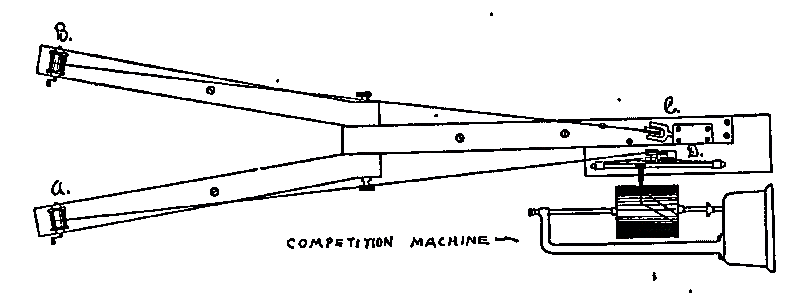

14|RELATED-SAMPLES \(t\)-TEST

Overview
Research design
Independent-samples
- “Between-participants” design
- Two treated samples containing different people
- Individual differences contribute to variability
Related-samples
- Repeated-measures
- “Within-participants” design
- Two treatment conditions, but same individuals in both
- Record two scores per individual (one per condition)
- Individual differences cannot contribute to difference between groups
Related-samples
- Matched-subjects
- Two samples of different people; each individual in sample A is “matched” on relevant variables with an individual in sample B
- Uses same statistical procedures as repeated-measures
- But requires twice as many participants as within-p’s design
Advantages & disadvantages
- Advantages of related-samples design
- Requires fewer subjects (not true of matched subjects)
- Able to study changes over time
- Reduces or eliminates individual differences as a source of variability; therefore less variability in scores
- Disadvantages of repeated-measures design
- Factors besides treatment may cause subject’s score to change during the time between measurements
- Participation in first treatment may influence score in the second treatment (order effects)
- Counterbalancing is a way to control time-related or order effects
- Participants can drop out
Equations
Logic
| Sample A | Sample B |
|---|---|
| 54 | 43 |
| 67 | 57 |
| 38 | 39 |
| 46 | 41 |
| 42 | 36 |
| Sample A | Sample B | D |
|---|---|---|
| 54 | 43 | -11 |
| 67 | 57 | -10 |
| 38 | 39 | 1 |
| 46 | 41 | -5 |
| 42 | 36 | -6 |
Equations
\(t = \dfrac{\text{sample statistic} - \text{population parameter}}{\text{estimated standard error}}\)
Single sample:
\(t = \dfrac{M-\mu}{s_M}\)
Independent samples:
\(t = \dfrac{(M_1-M_2)-(\mu_1-\mu_2)}{s_{M_1-M_2}}\)
Related samples:
\(t = \dfrac{M_D-\mu_D}{s_{M_D}}\)
Calculating related-samples \(t\)
\(df = n-1\) (number of difference scores minus \(1\))
Difference scores:
\(D = X_B - X_A\)
Mean of difference scores:
\(M_D = \dfrac{\Sigma D}{n}\)
Standard error of difference scores:
\(S_{M_D} = \dfrac{s_D}{\sqrt{n}}\)
\(t\) statistic:
\(t = \dfrac{M_D - \mu_D}{s_{M_D}}\)
Hypothesis test
Triplett
- E.g. Norman Triplett (1898)
- Performing alone/in competition

Triplett, N. (1898). The dynamogenic factors in pacemaking and competition. The American Journal of Psychology, 9(4), 507-533. https://doi.org/10.2307/1412188
Triplett data

As independent samples
| Alone | \(X-M\) | \((X-M)^2\) |
|---|---|---|
| 54 | 4.6 | 21.16 |
| 67 | 17.6 | 309.76 |
| 38 | -11.4 | 129.96 |
| 46 | -3.4 | 11.56 |
| 42 | -7.4 | 54.76 |
| \(M = 49.40\) | \(SS = 527.20\) | |
| \(s^2 = 131.80\) | ||
| \(s = 11.48\) |
| Competition | \(X-M\) | \((X-M)^2\) |
|---|---|---|
| 43 | -0.2 | 0.04 |
| 57 | 13.8 | 190.44 |
| 39 | -4.2 | 17.64 |
| 41 | -2.2 | 4.84 |
| 36 | -7.2 | 51.84 |
| \(M = 43.20\) | \(SS = 264.80\) | |
| \(s^2 = 66.20\) | ||
| \(s = 8.14\) |
As independent samples
- Step 2: Decision criteria
\(\text{With } \alpha = .05, t_{critical} (8) = \pm 2.31\)
- Step 3: Calculate
\(df = N - 2 = 10 - 2 = 8\)
\(s^2_p = \dfrac{SS_1 + SS_2}{df_1 + df_2} = \dfrac{527.2 + 264.8}{4 + 4} = 99\)
\(s_{M_1-M_2} = \sqrt{\dfrac{s_p^2}{n_1}+\dfrac{s_p^2}{n_2}} = \sqrt{\dfrac{99}{5}+\dfrac{99}{5}} = 6.29\)
\(t = \dfrac{(M_1-M_2)-(\mu_1-\mu_2)}{s_{M_1-M_2}} = \dfrac{49.4 - 43.2}{6.29} = 0.99\)
As related samples
| Participant | Alone | Comp | \(D\) | \(D-M_D\) | \((D-M_D)^2\) |
|---|---|---|---|---|---|
| Violet F. | 54 | 43 | -11 | -4.8 | 23.04 |
| Anna P. | 67 | 57 | -10 | -3.8 | 14.44 |
| Willie H. | 38 | 39 | 1 | 7.2 | 51.84 |
| Bessie V. | 46 | 41 | -5 | 1.2 | 1.44 |
| Howard C. | 42 | 36 | -6 | 0.2 | 0.04 |
\(M_D = -6.2\)
\(SS = 90.8\)
\(s^2 = 22.7\)
\(s = 4.76\)
As related samples
\(\text{With } \alpha = .05, t_{critical} (4) = \pm 2.78\)
\(df = n-1 = 5 - 1 = 4\)
\(S_{M_D} = \dfrac{s_D}{\sqrt{n}} = \dfrac{}{\sqrt{5}} = 2.13\)
\(t = \dfrac{M_D - \mu_D}{s_{M_D}} = \dfrac{}{2.13} = -2.91\)
Effect size
- Step 4b: Effect size
- If the result was significant
- Cohen’s \(d\) for related-samples \(t\)-test:
\[\begin{align} \text{Estimated Cohen's } d &= \dfrac{\text{mean of difference scores}}{\text{SD of difference scores}} \\ &= \dfrac{M_D}{s_D} \\ &= \dfrac{-6.2}{4.76} = -1.3 \end{align}\]
Report results
“When performing in competition, children completed the race faster on average \((M = 43.2\); \(SD = 8.14)\) than when performing alone \((M = 49.4\); \(SD = 11.48)\). A related-samples found the difference to be statistically significant; \(t(4) =\) \(-2.91\), \(p <.05\), \(d = 1.30\).”
Assumptions
- Observations within each treatment condition must be independent
- Population distribution of difference scores is normally distributed
- With relatively large samples (n > 30) this assumption can be ignored
Confidence Interval
\[\begin{align} (\mu_1-\mu_2) &= (M_1-M_2) \pm t * s_{M_1-M_2} \\ &= (43.2 - 49.4) \pm 2.31 * 6.29 \\ &= -20.71, 8.31 \end{align}\]
\[\begin{align} \mu_D &= M_D \pm t * s_{M_D} \\ &= -6.2 \pm 2.78 * 2.13 \\ &= -12.12, -0.28 \end{align}\]
Learning checks
- Think of a research question which would require…
- A single-sample \(t\)-test
- An independent-samples \(t\)-test
- A related-samples \(t\)-test
- What does it mean if the value of the \(t\) statistic is near \(0\) for:
- A single-sample \(t\)-test?
- An independent-samples \(t\)-test?
- A related-samples \(t\)-test?
w = 500
h = 550
r = 20
fill = d3.scaleOrdinal(d3.schemeSet3)
<!-- makeSample = function () { -->
<!-- var arr = []; -->
<!-- for (var i = 0; i < 10; i++) { -->
<!-- arr.push(Math.floor(Math.random()*10)) -->
<!-- } -->
<!-- return arr; -->
<!-- } -->
independentSamplesFigure = {
function makeSample () {
var arr = [];
for (var i = 0; i < 10; i++) {
arr.push(Math.floor(Math.random()*10))
}
return arr;
}
const svg = d3.select("#independent-samples-container")
.append("svg")
.attr("viewBox", "0 0 " + w + " " + h)
.attr("preserveAspectRatio", "xMinYMin meet")
const labels = svg.append("g")
.style("font-size", "20px")
.style("font-weight", "bold")
.attr("class", "invertable")
labels.selectAll("text")
.data(["A","B"]).enter().append("text")
.attr("x", (d,i) => w/4 + i * w/2).attr("y", 20)
.text(d => "SAMPLE " + d).attr("text-anchor", "middle")
const sampleDots = svg.append("g")
const g = sampleDots.selectAll("g").data([0,1]).enter().append("g").attr("transform", (d,i) => `translate(${w/4 + i * w/2}, 0)`).style("stroke", "black")
g.each(function(d,i){
d3.select(this)
.selectAll("circle")
.data(makeSample()).enter().append("circle")
.attr("cy", (d,i) => 60 + i*r*2.5)
.attr("r", r)
.style("fill", d => fill(d))
})
}
relatedSamplesFigure = {
function makeSample () {
var arr = [];
for (var i = 0; i < 10; i++) {
arr.push(Math.floor(Math.random()*10))
}
return arr;
}
const svg = d3.selectAll("#related-samples-container")
.append("svg")
.attr("viewBox", "0 0 " + w + " " + h)
.attr("preserveAspectRatio", "xMinYMin meet")
const labels = svg.append("g")
.style("font-size", "20px")
.style("font-weight", "bold")
.attr("class", "invertable")
labels.selectAll("text")
.data(["A","B"]).enter().append("text")
.attr("x", (d,i) => w/4 + i * w/2).attr("y", 20)
.text(d => "SAMPLE " + d).attr("text-anchor", "middle")
const lines = svg.append("g").attr("transform", `translate(${w/4 + r * 1.5}, 60)`).style("stroke", "black")
.attr("class", "invertable")
.selectAll("line").data([0,1,2,3,4,5,6,7,8,9]).enter()
.append("line")
.attr("x2", w/2 - 2 * r * 1.5)
.attr("y1", (d,i) => i * r * 2.5)
.attr("y2", (d,i) => i * r * 2.5)
const sampleDots = svg.append("g")
const sample = makeSample()
const g = sampleDots.selectAll("g").data([0,1]).enter().append("g").attr("transform", (d,i) => `translate(${w/4 + i * w/2}, 0)`).style("stroke", "black")
g.each(function(d,i){
d3.select(this)
.selectAll("circle")
.data(sample).enter().append("circle")
.attr("cy", (d,i) => 60 + i*r*2.5)
.attr("r", r)
.style("fill", d => fill(d))
})
}
matchedSamplesFigure = {
function makeSample () {
var arr = [];
for (var i = 0; i < 10; i++) {
arr.push(Math.floor(Math.random()*10))
}
return arr;
}
const svg = d3.selectAll("#matched-samples-container")
.append("svg")
.attr("viewBox", "0 0 " + w + " " + h)
.attr("preserveAspectRatio", "xMinYMin meet")
const labels = svg.append("g")
.style("font-size", "20px")
.style("font-weight", "bold")
.attr("class", "invertable")
labels.selectAll("text")
.data(["A","B"]).enter().append("text")
.attr("x", (d,i) => w/4 + i * w/2).attr("y", 20)
.text(d => "SAMPLE " + d).attr("text-anchor", "middle")
const lines = svg.append("g").attr("transform", `translate(${w/4 + r * 1.5}, 60)`)
.style("stroke", "black").style("stroke-dasharray", [10,10]).attr("class", "invertable")
.selectAll("line").data([0,1,2,3,4,5,6,7,8,9]).enter()
.append("line")
.attr("x2", w/2 - 2 * r * 1.5)
.attr("y1", (d,i) => i * r * 2.5)
.attr("y2", (d,i) => i * r * 2.5)
const sampleDots = svg.append("g")
const sample = makeSample()
const g = sampleDots.selectAll("g").data([0,1]).enter().append("g").attr("transform", (d,i) => `translate(${w/4 + i * w/2}, 0)`).style("stroke", "black")
g.each(function(d,i){
d3.select(this)
.selectAll("circle")
.data(sample).enter().append("circle")
.attr("cy", (d,i) => 60 + i*r*2.5)
.attr("r", r)
.style("fill", d => fill(d))
})
}